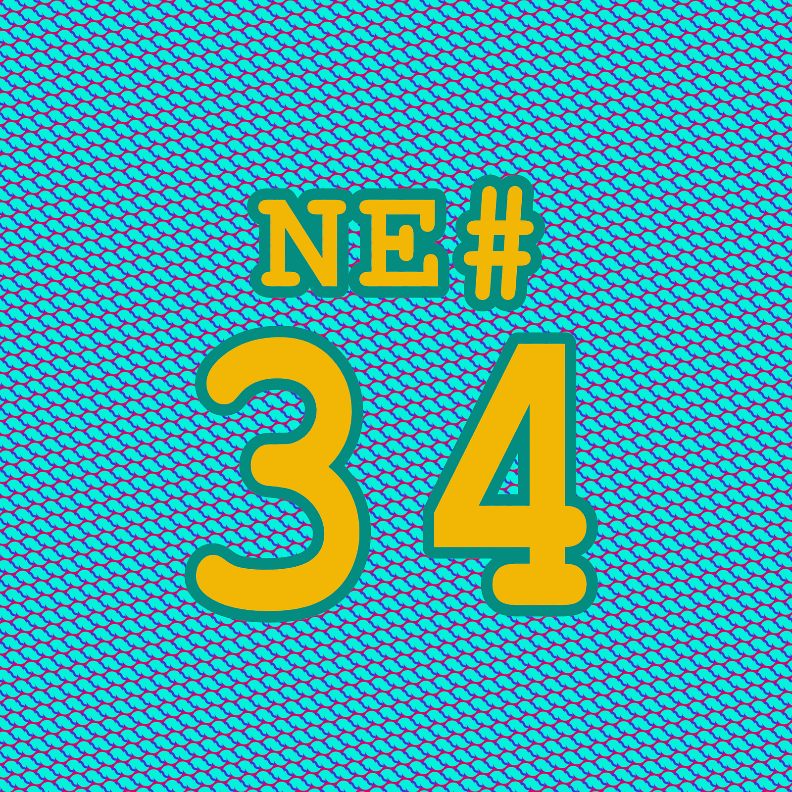

Die Nerd Enzyklopädie 34 - JavaScript wurde innerhalb von 10 Tagen entwickelt
JavaScript wurde innerhalb von 10 Tagen entwickelt

JavaScript ist eine der am weitesten verbreiteten Programmiersprachen der Welt und für die Funktion und Popularität des WWW von großer Bedeutung. Während HTML die statische Darstellung von Inhalten im Browser ermöglicht, lassen sich dank JavaScript diese Inhalte dynamisch darstellen und modifizieren. JavaScript hat in den letzten Jahrzehnten eine beeindruckende Entwicklung hingelegt, angefangen als Script-Sprache innerhalb des Browsers bis hin zur Grundlage für eine leistungsfähige Webserver-Architektur.
Es gibt zahlreiche Anwendungsgebiete, sei es als Sprache innerhalb des Datenbanksystems MongoDB, für die Entwicklung von Spielen und Anwendungen oder als serverseitige Applikation [THEN1].
JavaScript ist extrem erfolgreich, vielseitig und beliebt. Und alles begann mit einer kleinen Sprache, die innerhalb von 10 Tagen entwickelt wurde!
Als das Web noch ganz jung war, wurden Seiten mit HTML dargestellt. HTML war relativ simpel und so musste man keine große Programmierer:in sein, um eigene Inhalte auf die Bühne des Webs zu hieven. Diese Einfachheit war ein wichtiger Erfolgsfaktor für das frühe World Weide Web.
Dank des plattformunabhängigen Browsers Netscape waren Webentwickler:innen in der Lage, ihre Programme unkompliziert für unterschiedliche Betriebssysteme zur Verfügung zu stellen. Was fehlte war die Möglichkeit mit den Inhalten zu interagieren. Netscape erkannt das Problem und betraute 1995 Brendan Eich mit wichtigen Aufgabe eine Lösung in Form einer entsprechenden Programmiersprache zu entwickeln.
“But Marc Andreessen of Netscape, Bill Joy of Sun, and myself [Brendan Eich] and a few others saw that there was a need for a language that was approachable, that you could put directly in the web page,”
Brendan Eich, InfoWorld, 2011
Anfangs hieß es noch, dass die Programmiersprache Scheme als Grundlage dienen könnte. Dann wurde Java in Betracht gezogen und so verhandelte Netscape mit Sun Microsystems, um Java im hauseigenen Browser zu unterstützen. Aber Java (damals noch Oak genannt) war groß und komplex. Sollte die Webentwicklung weiterhin zugänglich sein, war Java nicht die beste Wahl. Es musste eine einfache Lösung her, ähnlich wie Microsofts VisualBasic, das als Einstiegs-Alternative für C oder C++ galt.
Und so kam es, dass Eich im Mai 1995 innerhalb von 10 Tagen einen ersten funktionsfähigen Prototypen von JavaScript entwickelte, da noch unter dem Namen Mocha. Mocha wurde erstmal mit dem Netscape Navigator 2.0 vorgestellt. Im September 1995 änderte man den Namen zu **LiveScript **— Live klang aus Marketingsicht dynamischer. Außerdem hatte Eich die Zeit genutzt, um einen Großteil des Codes aufzuräumen; zehn Tage sind erwartungsgemäß sehr knapp, um eine gewisse Codequalität zu erhalten.
Im Dezember 1995 wurde dann der Name JavaScript eingeführt, um die Bedeutung als einfache Alternative zu Java zu unterstreichen und sicherlich auch um ein wenig von Javas Popularität zu profitieren. Intern wird die JavaScript-Engine bis heute als SpiderMonkey bezeichnet.
Der große Konkurrent auf dem Browser-Markt, Microsoft, ließ nicht lange auf sich warten. Im August 1996 zog man nach und implementierte seine eigene JavaScript-Engine im Internet Explorer: JScript. Da man damals aber noch nicht soviel von Standards hielt, war JScript nur bedingt kompatibel zu SpiderMonkey. Nur eine Folge des Browser-Krieges, die in den folgenden Jahren vielen Web-Entwickler:innen Kopfschmerzen und schlaflose Nächte bereiten sollte.